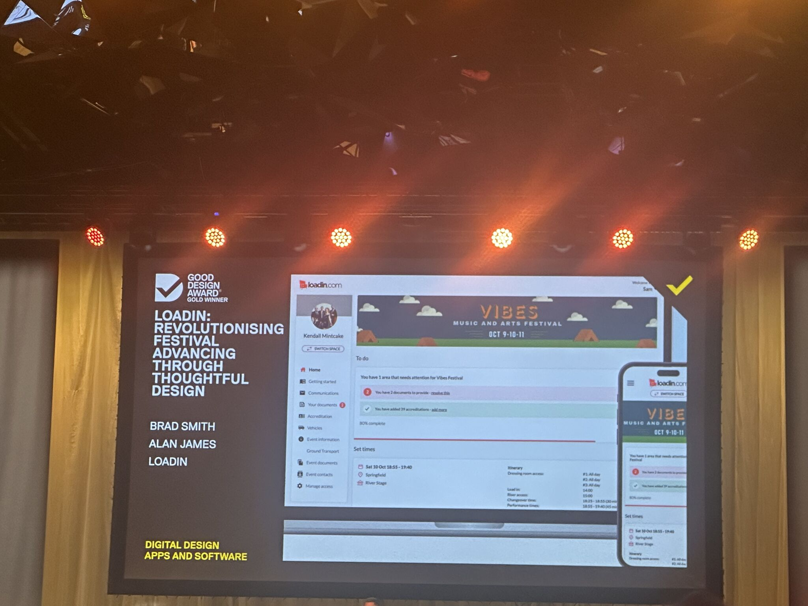
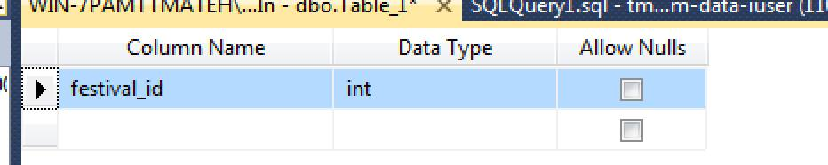
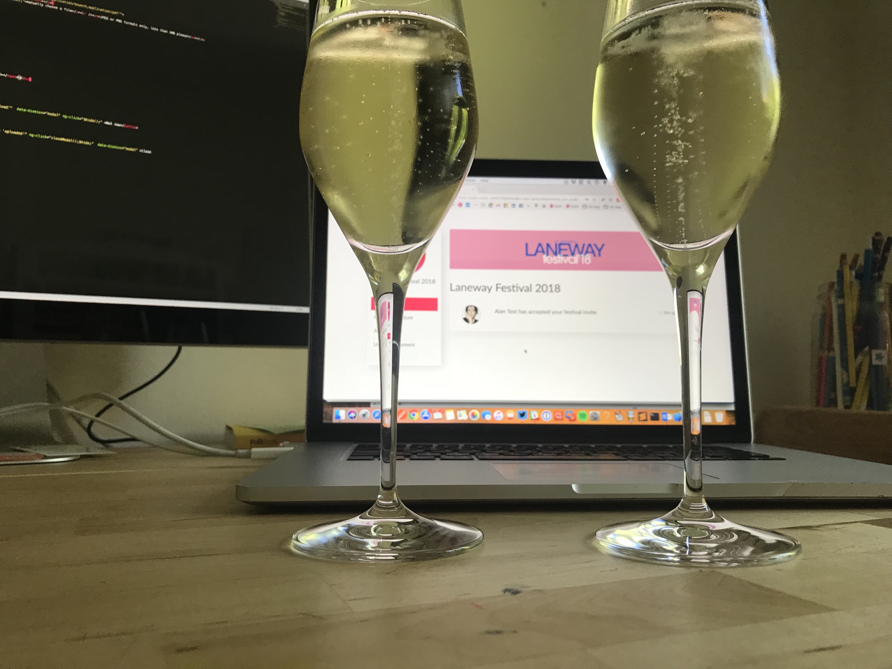
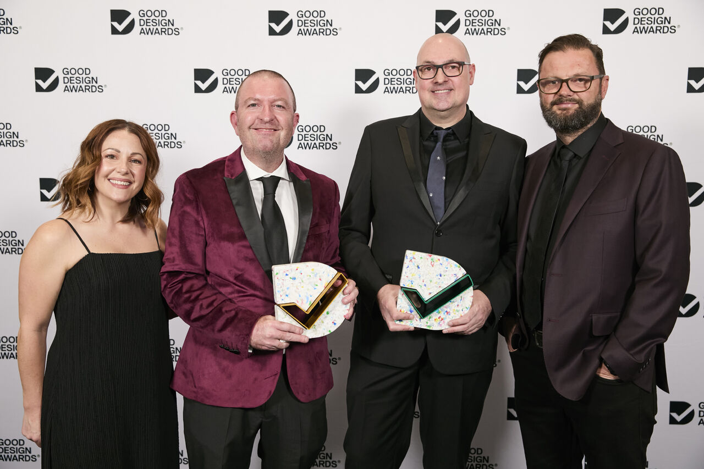

Good Design Award® Gold winner.
‘Why don’t we zoom out and fix it for the world?’
I met my co-founder Haydn Johnston in the most unlikely of tech startup incubators — mother’s group for our first-borns. We bonded over music and sneaking away for a pint at our local, and the conversation kept coming back to the same problem: live music production was broken. ‘This time next year’, we joked. We weren’t joking for long.
Too many times, at least once a festival, there’d be a dispute over whether specifications had actually been agreed. Artists didn’t trust that their Technical Rider would be translated into reality. Festival production staff were never sure they had the latest document. Several people on each side having separate conversations, none of them aware of the others. Information scattered across emails, faxes, and phone calls.
Haydn had one too many festivals with the inevitable outcome of miscommunication. He asked me to build him a database to solve it. In classic designer mode, I replied: ‘why don’t we zoom out and fix it for the world?’
That was the sliding doors moment. What started as a favour for a mate became the opportunity to build something that was the culmination of my entire career — design, development, and product thinking, all pointed at one wicked problem. The ambition was that the very biggest artists in the world would be using our platform (spoiler: Billie Eilish was on the very first show. Coldplay took a little longer).
Certainty of performance
A festival has three stakeholders: the promoter, the artist, and the audience. If an artist’s stage requirements don’t get heard, the performance suffers. If the performance suffers, the audience has a problem. And if the audience has a problem, the event has a problem. Everything cascades from one broken link — uncertainty about what was agreed before show day.
We started with a workshop. We got stakeholders from Laneway — Australia’s biggest touring festival — along with industry leaders and artist representatives into one room. Everyone had a story to tell.
We got the post-it notes out. Nothing was off limits. This wasn’t a blame exercise but an opportunity to solve a long-held dissonance between artist and festival. The affinity mapping surfaced one overriding theme: transparency. Both sides wanted a single source of truth — one place where the Technical Rider was current, agreed, and visible to everyone who needed it.
From that exercise we found our MVP. And we found our first customer — Laneway agreed to pilot the platform for their upcoming 2018 tour, starting January 26 in Singapore. We had until November.

Customer-centred from day one
We wrote a clear hypothesis: an online portal where artists and festivals could collaborate in a single interface would reduce the disparity between what the artist expects on showday and what the production team believes is correct.
I made it clear to Alice — our SME at Laneway — that the line was always open. This was to be fully customer-centred design. Many times she’d call with small additions to scope. If a quick DVF analysis showed it was feasible and would add value at scale, we built it.
I designed and built the UX, the front-end, and the information architecture. For visual design I brought in Brad Smith — the best visual designer I’ve ever worked with, and someone I’d go on to collaborate with at Westpac. Together we’re double the sum of our parts. No dev team beyond me. I could see a problem in a user session and ship a fix the same day.
Growth was entirely organic. Zero advertising spend. Festivals adopted it because it solved a real problem better than anything else. Each new client made the platform smarter — their workflows shaped the product, not the other way around.
Architecture decisions that compound
Early on I made a deliberate architectural choice: build for the general case, not the specific client. Laneway was the first customer, but the data model had to work for any festival, any venue, any scale. Every entity — artist, event, stage, schedule slot — was abstracted so that the platform could grow without being rewritten.
That decision paid for itself within 12 months. When Live Nation UK came on board with a dozen festivals, the platform handled it without a single structural change. When SXSW needed to manage 1,000+ acts across multiple venues, the same architecture scaled.
On the design side, I built a component-based design system from day one — informed by my experience building Westpac’s GEL. Over 100 custom SVG icons designed for the specific context of festival production. A colour system that works on a muddy festival site at 2am on a phone screen. Typography optimised for scanning, not reading — because production managers don’t have time to read.
The iteration cycle was relentless. I’d watch users in the field, identify friction, and ship fixes the same day. No handoff, no sprint planning, no ticket queue. That speed is the compound advantage of being both designer and developer — the feedback loop is measured in hours, not weeks.

From one festival to the world
Loadin launched on 5 November 2017. Every band on the Laneway bill uploaded their riders. Across seven legs of the tour, there were zero disputes. Unheard of.

From there, it grew — entirely by word of mouth. First across Australia: Spilt Milk, Beyond the Valley, Wildlands, and the Sydney Gay and Lesbian Mardi Gras. Then into the UK, powering all of Live Nation and Festival Republic’s events — Reading & Leeds, Download, Isle of Wight, Latitude, Wireless, and Radio 1 Big Weekend. Then Pride in London, Camp Bestival, Independent Venue Week, Isle of MTV Malta, and the UK Olympic and Paralympic homecomings.
In 2023 we went to the next level: the entire SXSW Sydney program. Two years later, SXSW London. As part of this rapid expansion I was able to hand over day-to-day operations to a superstar General Manager — Kat Coppins, who was also our very first paying customer back in 2019 — and hand the development reins to a talented team.
30 years. First nomination. Two wins.
We thought — why not see if the work stacks up against everyone else? In thirty years of designing and building things, I’d never nominated for or won an award. But I was prouder of Loadin than anything I’d been involved in. So we entered the Good Design Awards.
We didn’t just win once. We won twice — a Good Design Award for Service Design, and a coveted Gold for Digital Design, up against submissions from multinationals with budgets we couldn’t dream of. Two blokes, zero advertising spend, Gold.
This wasn’t down to me alone. Without Haydn there’s no problem to solve — his deep industry knowledge and relationships opened every door. Without Brad, the design wouldn’t have the polish that made it award-worthy — a creative partnership where we’re genuinely double the sum of our parts. You find that once or twice in a lifetime if you’re lucky. And without Kat, who took the reins as General Manager and turned Loadin into a thriving business, I’d still be running operations instead of doing what I do best — being curious and solving problems.
That’s the point. Loadin is in exceptional hands, which means I get to bring everything it taught me — zero-to-one thinking, product-market fit, building for real users — to the next challenge.
